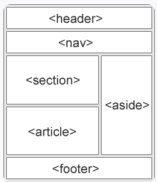

In web design, a semantic element is an element that has intrinsic meaning, and conveys that meaning to both the browser and the developer.
For example, < div> and < span> are non-semantic elements. They tell us nothing about their contents. But < form >, < table >, and < article > are semantic elements: They clearly define their content.
HTML5's semantic elements help structure the code we create, making it more readable and easier to maintain. They help us build better site structures, and more importantly, they can seriously improve websites’ accessibility.
Here are some main semanic tags:
An example page using HTML5’s semantic tags from W3Schools.